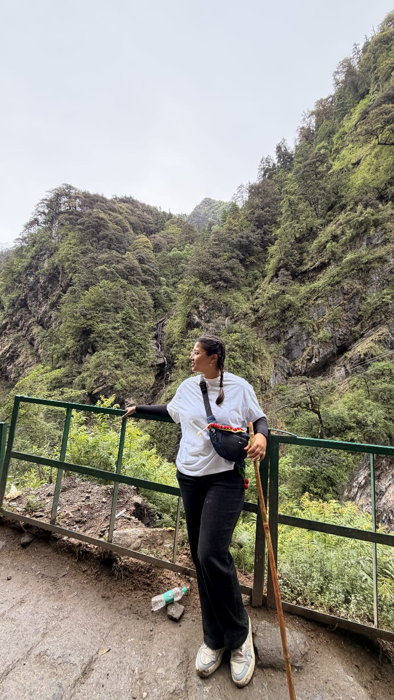
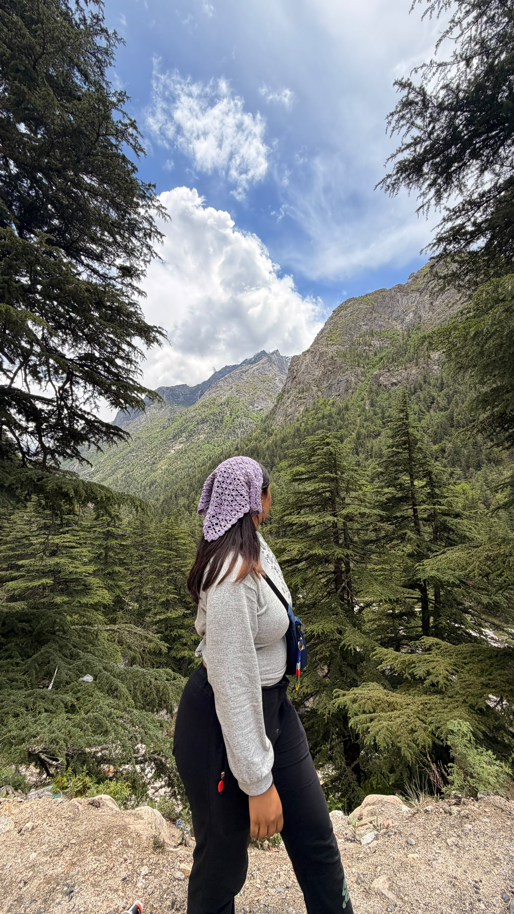

How I Got Here
I enrolled in B.Tech CSE for the security and systems world, but somewhere between network labs and cybersecurity coursework, I discovered that the thing I was actually obsessed with was how content moves people.
It started small: building my Instagram page @anweshamondall in 2022, figuring out what hooks work, why certain videos hit 50K views and others don't. That curiosity turned into a craft.
By 2023 I was designing creatives for the JKLU Student Council, running campaigns, maintaining visual branding across platforms. Then came the real test: a remote internship at Toposel Digital Marketing, working across four active client brands.
Content creator begins
@anweshamondall, building from scratch
Student Council Design Lead
Campus campaigns, branding, events
Toposel Internship
Retention marketing across 4 live brands

